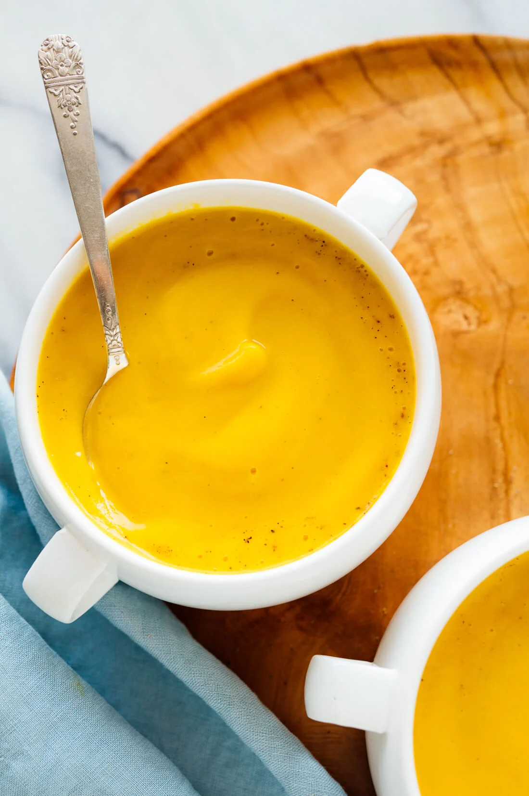

Roasted Butternut Squash Soup

Ingredients
- 1 large butternut squash (about 3 pounds), halved vertically* and seeds removed
- 1 tablespoon olive oil, plus more for drizzling
- ½ cup chopped shallot (about 1 large shallot bulb)
- 1 teaspoon salt
- 4 garlic cloves, pressed or minced
- 1 teaspoon maple syrup
- ⅛ teaspoon ground nutmeg
- Freshly ground black pepper, to taste
- 3 to 4 cups (24 to 32 ounces) vegetable broth, as needed
- to 2 tablespoons butter, to taste
Directions
- Preheat the oven to 425 degrees Fahrenheit and line a rimmed baking sheet with parchment paper.
Place the butternut squash on the pan and drizzle each half with just enough olive oil to lightly
coat the squash on the inside (about ½ teaspoon each). Rub the oil over the inside of the squash
and sprinkle it with salt and pepper.
- Turn the squash face down and roast until it is tender and completely cooked through, about 40 to 50 minutes
(don't worry if the skin or flesh browns—that's good for flavor). Set the squash aside until it's cool enough
to handle, about 10 minutes.
- eanwhile, in a large soup pot, warm 1 tablespoon olive oil over medium heat until shimmering (if your blender
has a soup preset, use a medium skillet to minimize dishes.) Add the chopped shallot and 1 teaspoon salt. Cook,
stirring often, until the shallot has softened and is starting to turn golden on the edges, about 3 to 4 minutes.
Add the garlic and cook until fragrant, about 1 minute, stirring frequently. Transfer the contents to your stand
blender (see notes on how to use an immersion blender instead).
- Use a large spoon to scoop the butternut squash flesh into your blender. Discard the tough skin. Add the maple syrup,
nutmeg and a few twists of freshly ground black pepper to the blender. Pour in 3 cups vegetable broth, being careful
not to fill the container past the maximum fill line (you can work in batches if necessary, and stir in any remaining
broth later).
- Securely fasten the lid. Blend on high (or select the soup preset, if available), being careful to avoid hot steam
escaping from the lid. Stop once your soup is ultra creamy and warmed through.
- If you would like to thin out your soup a bit more, stir in the remaining cup of broth. Add 1 to 2 tablespoons butter or
olive oil, to taste, and blend well. Taste and stir in more salt and pepper, if necessary.
- If your soup is piping hot from the blending process, you can pour it into serving bowls. If not, pour it back into your
soup pot and warm the soup over medium heat, stirring often, until it's nice and steamy. I like to top individual bowls
with some extra black pepper.
Please Click the link below for the origional recipe
Origional Recipe
Please click the link below to be lead to the home page
Home